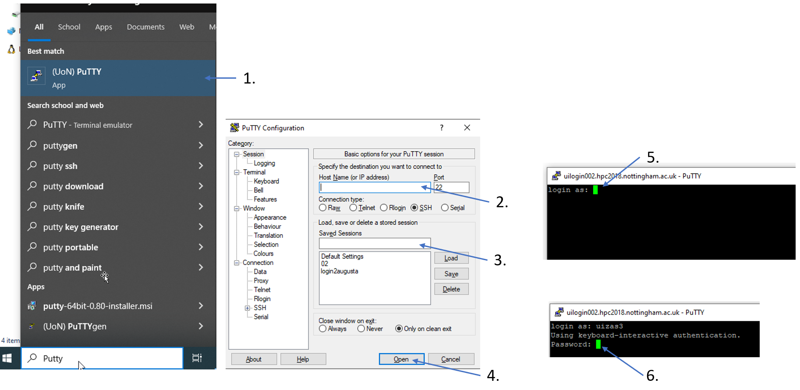

Basic Linux for HPC
Working with HPC resources requires a basic understanding of Linux systems. Some of our users are new to using Linux-based systems and have asked for introductory materials. Here is a collection for the basic command-line operations needed to get started with the cluster.
What is shell?
The shell is the program from which the user controls everything in a text-interface. When you login to the cluster remotely, you are already in the shell window of the system. In the shell, you can start typing commands to perform some action. The default shell on the cluster is bash.
Useful Shell basic commands
To open the shell for Ada, do the following,
Find (UoN)Putty app from windows
Type in <login002.augusta.nottinghan.ac.uk> in the host name tab.
You can save the session for logging in again.
Open.
A shell finally opens which prompts from the user, their university id.
Enter your password.
Once successfull you will be inside Augusta’s or Ada’s home page.
Bash: Files and directories
Command pwd tells me where I am. After login I am in the “home†directory
pwd /gpfs01/home/uizas3
I can change the directory with cd
cd tmp/talks /tmp/talks pwd /gpfs01/home/uizas3/tmp/talks
I can go one level up with cd ..
I can return to my HOME folder with cd
List the contents with ls -l
user@sol-login:~/tmp/talks ls -l total 164 drwxr-x--- 4 uizas3 domain users 4096 Feb 12 14:02 CUDA-related drwxr-x--- 6 uizas3 domain users 4096 Jan 26 10:37 EXAMPLES drwxr-x--- 9 uizas3 domain users 4096 Feb 12 12:01 HPC-fluent-soton drwxr-x--- 4 uizas3 domain users 4096 Feb 2 10:06 MPI -rw-r----- 1 uizas3 domain users 145573 Feb 12 13:54 VCFtools.pdf
Bash: creating directories and files
We create a new directory called results and change to it
mkdir results cd results
Creating and editing files
Textfiles can be edited on your local computer and then transferred.
Textfiles can also be edited locally using text editor like nano/emacs/vim.
Copying, moving renaming and deleting
# copy file
cp draft.txt backup.txt
# recursively copy directory
cp -r results backup
# move/rename file
mv draft.txt draft_2.txt
# move/rename directory
mv results backup
# move directory one level up
mv results ..
# remove file
rm draft.txt
# remove directory and all its contents
rm -r results
File permissions with chmod
In Linux systems all files have a user, a group and a set of privileges which determines what resources a user can access. Every file has three different kind of access: read(r), write(w) and execute(x), as well as three different kind of permissions depending on if the person is the owner(u=user) of the file, in the same group(g) or someone else(o=other).
chmod g+w file
Adds(+) write(w) permissions for group(g) to the file.
There is another way to set the permissions by using numbers. Assume that each permission equals the number listed below:
Number |
Type |
|---|---|
0 |
no permissions |
1 |
execute |
2 |
write |
4 |
read |
chmod 753 file
Gives the user the read, write and execute permission(4+2+1), whereas users in the same group get read and execute permissions (4+1) while others get write and execute permissions (2+1).
Bash: history and tab completion
history preserve commands used
history 689 cd .. 691 cd Documents/ 692 cp -r introduction /gpfs01/home/uizas3/Documents/Presentations 693 cd introduction/ 694 ls -l 695 pwd 696 history
If I want to repeat…
!696 pwd ~/Documents/introduction
Use also the TAB key for completion
CTRL/R to search for previous commands
Arrows up/down to scroll for earlier commands
Bash: finding things
Extract lines which contain an expression with grep
# extract all lines that contain searchme grep searchme draft.txt
If you do not know what a UNIX command does, examine it with man
man [command]
Find files with find
find ~ | grep lostfile.txt
We can pipe commands and filter results with |
grep energy results.out | sort | uniq
Bash: Redirecting output
Print content of a file to screen
cat test.out
Redirect output to a file
cat test.out > myfile.txt
Append output to a file
cat test.out >> myfile.txt
Bash: Writing shell scripts
The following is helpful when you have, say, lots of files with ordered filenames, which you can use to sort and manage as per your requirement. See an example below.
#!/bin/bash
# here we loop over all files that end with *.out
for file in *.out; do
echo $file
cat $file
done
We make the script executable and then run it
# Make it executable
chmod u+x my_script
# run it
./my_script
Arguments to script can be passed by using $
File example
#!/bin/bash
echo "Arg 1 = $1, Arg 2 = $2, Args = $*"
./myscript Hello, World!
Arg 1 = Hello,, Arg2 = World!, Args = Hello, World!
where $1 to $n denote the first to n-th argument, while myscript.sh is the shell executable. This can be created with
- ::
chmod +x myscript.sh
To starting executing such scripts, you would need to start with a
text-editor. Choosing a text-editor is a matter of personal choice, the
most popular ones being Vim and Emacs. But there are a lot more new and
interesting ones. Open your favorite text-editor and copy-paste the file
example above and save with file as <script>. Then run the script by
typing ./<script>.
Information about shell commands
Information about a commands can be retrieved from the manual
man <cmd>
Also you can get information about where the executable lies
which <cmd>
Executing your software
Most commands are quite intuitive acronyms and are easy to remember once you start using them. The usual syntax is
command -option1 arg1 -option2 arg2
where command is the name of the command, -option1 and
-option2 specifies the particulars of the command (they are
optional, there can be as many options as the specific command permits),
and arg1 and arg2 are the value of the corresponding options. In
general
command -h
Prints information about what options and arguments you can enter.
Editing your files
Editing your files on our cluster can be done with several text editors. Emacs, vi/vim and nano can be opened by
$ emacs [filename]
$ vi [filename]
$ vim [filename]
$ nano [filename]
For Linux beginners, nano might be a good editor to start with. Emacs and vi have steeper learning curves, so a reference guide is provided here for the most common operations using these editors.
Emacs
A complete tour of using emacs can be found at https://www.gnu.org/software/emacs/tour/
Below is a table summarizing the most frequently used operations.
C-x means pressing simultaneously the control-key and x,
C-x 2 means first pressing both control-key and x and then
pressing 2, C-x C-s means first pressing control-key and
x followed by control-key and s, and M-x means pressing
the meta-key (Alt-key) and x simultaneously.
Keyboard command |
Purpose |
|---|---|
$ emacs foo.dat |
open foo.dat for editing |
C-x C-s |
save file |
C-x C-c |
quit emacs |
C-x C-w foo.dat |
save file as foo.dat |
C-_ or C-/ |
undo last change (can be repeated) |
C-g |
cancel current command |
C-s |
incremental search |
M-% |
Query replace |
C-f |
Move forward one character |
C-b |
Move backward one character |
M-f |
Move forward one word |
M-b |
Move backward one word |
C-n |
Next line |
C-p |
Previous line |
C-a |
Beginning of line |
C-e |
End of line |
M-< |
Beginning of buffer (file) |
M-> |
End of buffer |
C-k |
Kill (cut) line |
C-u 10 C-k |
Kill 10 lines (C-u <N> can be used to repeat any command) |
C-y |
Yank (paste) line |
C-SPC |
Set mark at current location |
C-w |
Kill (cut) region between current location and last mark |
M-w |
Save (copy) region |
C-x ( |
Start defining keyboard macro |
C-x ) |
End defining macro |
C-x e |
Execute macro once |
vi/vim
You can find tips and tricks for using vi at https://www.cs.colostate.edu/helpdocs/vi.html.
Below is a table summarizing the most frequently used operations of vi/vim.
Keyboard command |
Purpose |
|---|---|
$ vim foo.dat |
open foo.dat for editing |
i |
enter insert mode, insert before the cursor |
a |
enter insert mode, insert (append) after the cursor |
o |
enter insert mode, append a new line |
Esc |
exit insert mode |
:w |
save |
:q |
quit |
:wq |
save and quit |
:q! |
quit without save |
u |
undo last change |
Ctrl-r |
redo last change |
h |
move cursor left |
j |
move cursor down |
k |
move cursor up |
l |
move cursor right |
gg |
move to the beginning of file |
G |
move to the end of file |
10G |
move to line 10 |
x |
delete 1 character |
dw |
delete 1 word |
dd |
delete 1 line |
d5d |
delete 5 lines |
yyp |
duplicate 1 line |
/pattern |
search for pattern |
?pattern |
search backward for pattern |
n |
repeat search in same direction |
N |
repeat search in opposite direction |
:s/old/new/ |
replace the first old with new in the current line |
:s/old/new/g |
replace all old with new in the current line |
:%s/old/new/g |
replace all old with new throughout file |
Learn more at http://www.fprintf.net/vimCheatSheet.html
The apperance of vim can be configured via the ~/.vimrc file.
Below is an example
syntax on
filetype plugin indent on
set autoindent
set hlsearch " highlight search
set number " show line number
set ruler " show ruler at bottom right
" Return to last edit position when opening files
autocmd BufReadPost *
\ if line("'\"") > 0 && line("'\"") <= line("$") |
\ exe "normal! g`\"" |
\ endif
Congratulations on getting a basic linux driver licence.! Have fun on the HPC system now.
Further information
See also
- The Linux Command Line by William E. Shotts, Jr.
This book introduces the linux command line from the basics, and moves on to customizing the working environment and then finally to shell scripting. The entire book is available for free from the authors web page, and if you would like a paper copy you can order one from the publisher.
- UNIX / Linux Tutorial for Beginners
The University of Surrey has an online tutorial that introduces the linux command line. The web page also has links to other recommended linux books.